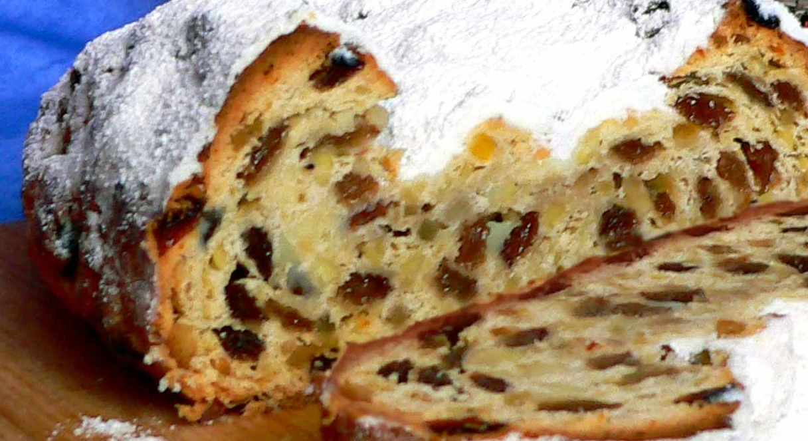
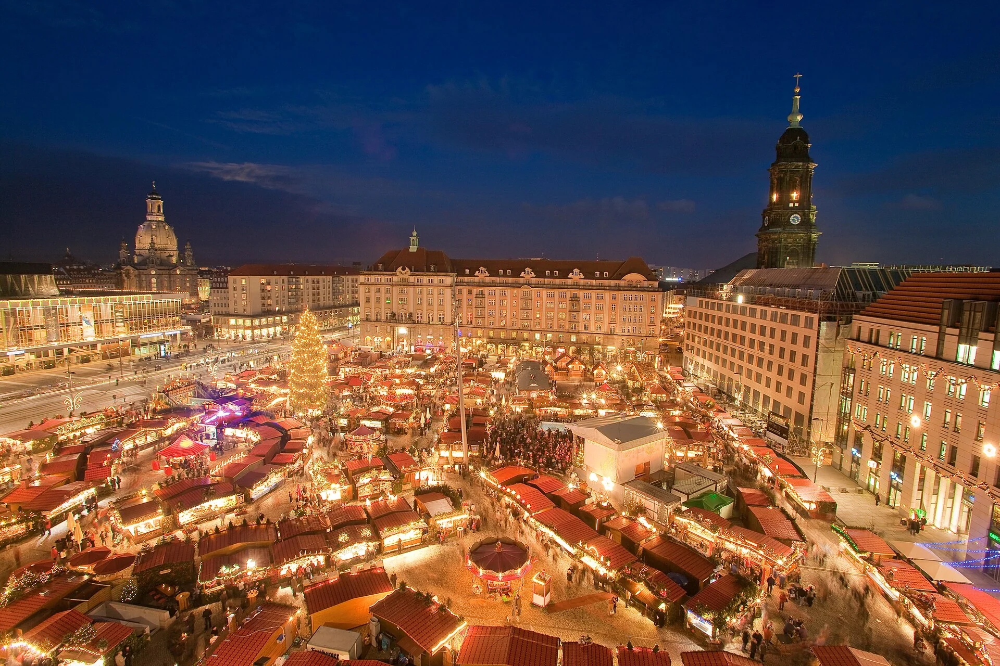
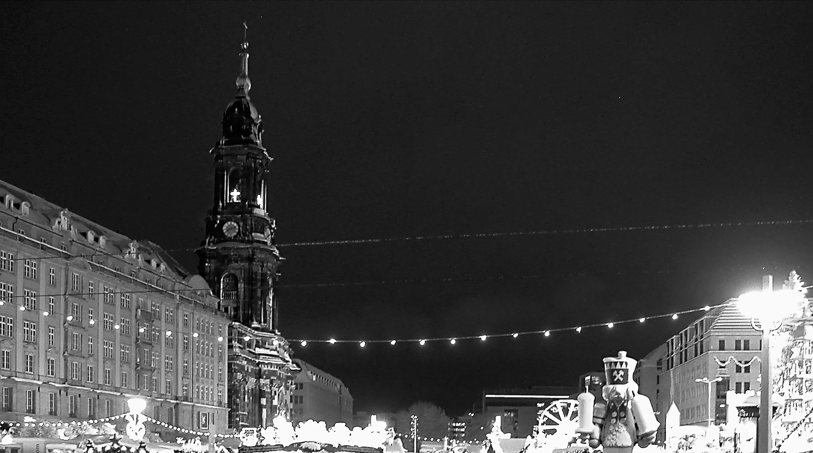
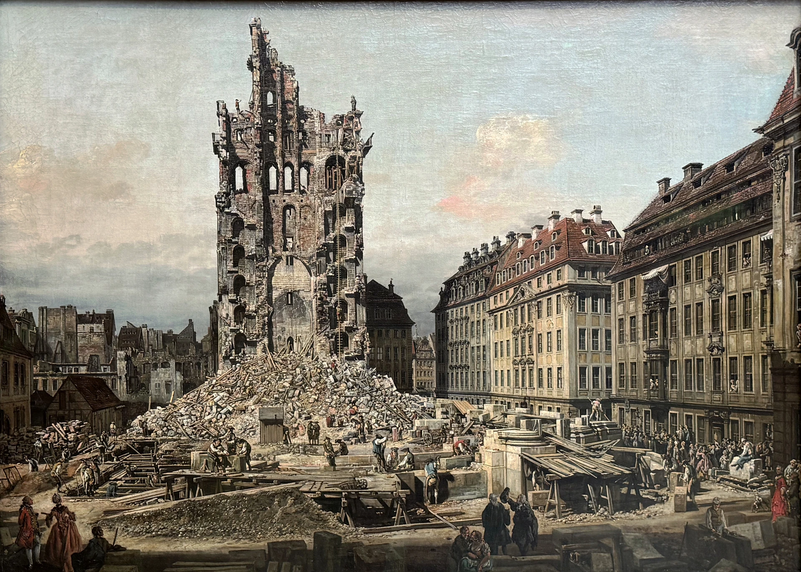
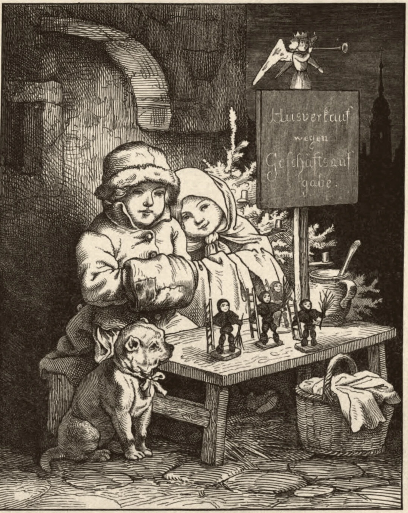
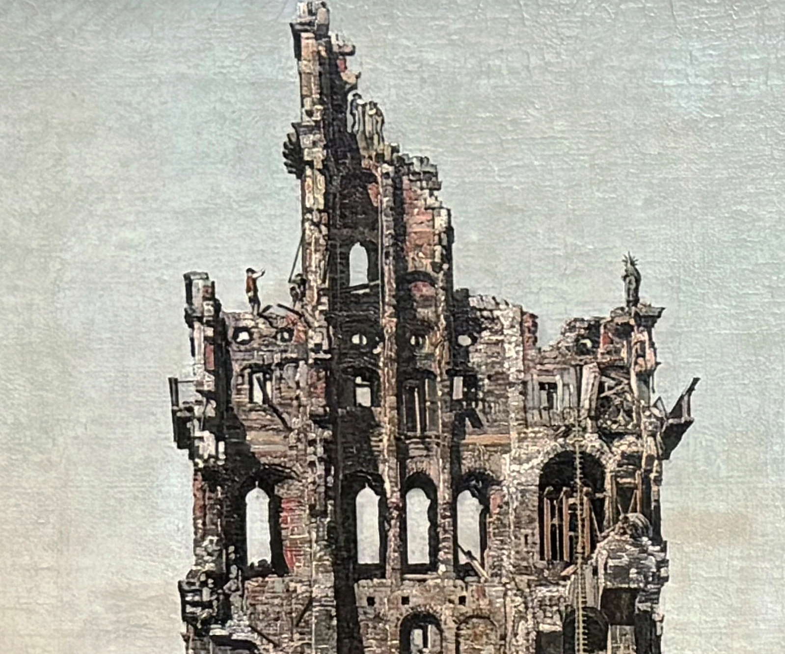

아직 펼치지 않은 카드성탄을 기다리는 날들 · 4드레스덴 슈트리첼마르크트이 오래된 성탄 시장의 이름은 어디에서 왔을까요?불빛이 가득한 시장이야. 이름이 무슨 뜻일까?
1434년부터독일 드레스덴 · 알트마르크트 광장
드레스덴 슈트리첼마르크트
1434년, 독일 드레스덴의 알트마르크트 광장에서 하루짜리 장이 처음 열렸어요. 그 장은 600년 가까이 이어져 지금의 성탄 시장이 되었어요. 1750년 무렵 그려진 광장과 오늘의 장터를 손잡이로 겹쳐 보세요.
아주 옛날 이 광장에 하루짜리 장이 섰대. 옛날 그림과 지금 사진을 겹쳐 보면 무엇이 달라졌을까?
검수 전 시안이에요(기준서 1판). 장면에는 기록에 있는 것만 옮겼고, 시장이 늘 같은 자리에서 열렸는지는 확인되지 않아 ‘그 자리에서 시작했다’고 썼어요. 상상은 ‘눈 감고 상상해 보기’에만 썼어요.
시안 확인용카드 단계 미리 보기
1
하루만 열린 고기 장
1434년, 작센의 선제후(황제를 뽑을 권리가 있던 제후) 프리드리히 2세가 드레스덴 알트마르크트 광장에 장을 열도록 허락했어요. 처음에는 딱 하루만 열리는 장이었어요.
대림절(성탄을 준비하며 기다리는 때) 금식이 끝나면 사람들은 성탄 잔치에 쓸 고기를 샀어요. 그래서 이 장에서는 먼저 고기를 팔았어요. 장이 잘되자 해마다 이어지며 다른 물건도 팔게 되었어요.
이름 ‘슈트리첼마르크트’는 성탄 빵 ‘슈트리첼’(슈톨렌의 옛 이름)에서 왔어요. 하지만 이 장이 처음 열린 까닭은 빵이 아니라 고기였어요.
아주 옛날 이 광장에 딱 하루만 장이 섰대. 처음엔 성탄 잔치에 쓸 고기를 팔았어!
물어보기성탄 잔치 날, 너는 무엇을 먹고 싶어?
2
같은 광장, 다른 탑
1750년 무렵, 화가 베르나르도 벨로토가 이 광장을 그렸어요. 장이 서지 않은 평소의 광장이에요. 왼쪽 뒤로 십자가 교회(크로이츠키르헤)의 탑이 솟아 있어요.
가운데 손잡이를 밀어 오늘의 광장과 겹쳐 보세요. 교회 탑의 모양을 눈여겨보세요.
가운데 손잡이를 밀어 1750년 무렵의 광장과 오늘의 장터를 겹쳐 보세요.


왼쪽 · 베르나르도 벨로토, 「슐로스가세에서 본 드레스덴 알트마르크트」, 1750~51년 무렵, 드레스덴 옛 거장 회화관 · 그림: 베르나르도 벨로토 · 사진: Dguendel · CC BY 4.0 · 위키미디어 공용 · 액자 테두리를 조금 잘라 씀
오른쪽 · 비슷한 쪽에서 본 2005년의 슈트리첼마르크트(흑백 사진, 아래쪽 사람들은 잘라 냄) · 사진: Jörg Blobelt · CC BY-SA 4.0 · 위키미디어 공용 · 일부 잘라 씀
같은 광장을 비슷한 쪽에서 본 모습이에요. 왼쪽 뒤의 탑은 같은 자리에 섰지만, 벨로토가 그린 탑은 1765년에 무너진 옛 탑이고, 사진의 탑은 그 뒤에 새로 올린 탑이에요. 광장도 1945년 공습 뒤 모양을 바꿔 다시 지어서, 둘레 건물은 거의 다 바뀌었어요.
두 탑은 같은 자리에 섰지만 같은 탑이 아니에요. 벨로토가 그린 옛 탑은 1765년에 무너지고 헐려 사라졌어요.
옛날 그림이랑 지금 사진을 겹쳐 볼까? 교회 탑 모양이 달라!
물어보기옛날 탑과 지금 탑, 무엇이 달라 보여?
3
무너진 옛 탑
벨로토가 그린 옛 십자가 교회는 1760년 7월, 7년 전쟁 때 프로이센군의 포격을 받아 탑만 남았어요. 1765년 여름, 교회를 다시 지으려던 중에 그 탑마저 크게 무너져 내렸어요.
도시는 남은 부분을 벽돌 하나하나 헐어 내기로 했어요. 미국 게티 미술관이 소개한 1765년의 한 일지에 따르면, 7월 1일 한 석공이 막대를 엮어 만든 사다리로 탑에 올라 헐기 시작했고, 사람들이 몰려와 지켜보았어요.

벨로토는 이 광경을 그렸어요. 탑 오른쪽에 걸린 긴 사다리와, 모여서 지켜보는 사람들이 보여요. 그는 이 그림을 드레스덴 미술 아카데미의 첫 전시회를 위해 그렸고, 그림은 드레스덴 미술관이 사들였어요.
새 교회는 옛 탑이 무너지기 한 해 전인 1764년에 짓기 시작해 1792년에 다 지었어요. 지금 보이는 92미터 탑은 그때 올린 탑이에요. 1945년 2월 공습 때 교회가 또 부서졌지만, 이 탑과 바깥벽은 남았어요.
전쟁 때 부서진 옛 탑을 사람들이 벽돌 하나하나 헐었대. 탑 옆에 긴 사다리가 보여?
물어보기높은 탑에 사다리를 놓고 올라가면 어떤 기분일까?
4
슈트리첼 아이들
19세기 초, 굴뚝에 올라가 청소하던 어린아이들이 있었어요. 이 아이들을 본뜬 인형이 말린 자두로 만든 ‘플라우멘토펠’이에요.
몹시 가난한 집에서 이 인형을 만들면, 아이들이 날씨와 상관없이 장터에 나가 팔아야 했어요. 장터에서 물건을 팔던 이 아이들을 ‘슈트리첼 아이들’이라고 불러요. 1850년부터 아이들에게 장터에서 팔게 하는 것을 비판하는 목소리가 커졌고, 1910년에 마침내 금지되었어요.

1853년, 드레스덴의 화가 루트비히 리히터가 그린 성탄 장터의 두 아이예요. 리히터는 평범한 사람들, 특히 아이들의 삶을 즐겨 그렸어요. 탁자 위에는 사다리를 든 굴뚝 청소부 인형들이 놓여 있고, 팻말에는 독일어로 ‘가게를 접어 몽땅 팝니다’라고 적혀 있어요(이 안내서가 옮김).
지금 플라우멘토펠은 행운을 가져다준다는 장터의 상징이에요. 실크해트를 쓰고 사다리를 든 굴뚝 청소부 모습 그대로예요.
옛날 그림 속 두 아이가 굴뚝 청소부 인형을 팔고 있어. 옛날엔 가난한 집 아이들이 추운 날에도 이 인형을 팔았대.
물어보기이제는 아이들이 장터에서 일하지 않아도 돼. 왜 그렇게 정했을까?
5
오늘의 장터
오늘의 슈트리첼마르크트는 대림절 내내 열려요. 광장 가운데에는 높이 14.61미터, 세계에서 가장 큰 에르츠산맥(작센과 보헤미아에 걸친 옛 광산 지대의 산줄기)식 계단 피라미드가 서 있어요. 층층이 쌓은 나무 탑 모양의 성탄 장식이에요.
피라미드의 여섯 층에는 성경 이야기의 인물과 에르츠산맥 사람들을 나무로 깎은 인형들이 서 있고, 맨 위 날개 바퀴가 장터 위에서 돌아요.

행운을 가져다준다는 플라우멘토펠, 누구에게 주고 싶나요?
엄청 큰 성탄 피라미드야. 맨 위 날개가 빙글빙글 돌아!
물어보기피라미드 맨 위에서 장터를 내려다보면 어떤 모습일까?
눈 감고 상상해 보기
해가 지자 광장에 불이 하나둘 켜져요. 구운 아몬드 냄새와 따뜻한 음료의 김이 섞여요. 누군가 자두 인형을 들고 웃어요. 고개를 들면, 불빛 너머로 오래된 교회 탑이 어둠 속에 서 있어요.
눈을 감아 봐. 반짝반짝 불이 켜져. 고소한 냄새가 나. 고개를 들면 커다란 교회 탑이 보여!
나의 자리
기다림의 시간을 함께 밝혀 주는 내 곁의 ‘불빛’은 누구인가요?
시장에서 하나만 살 수 있다면 무엇을 사고 싶어?
마음에 닿는 한 줄을 고르거나 직접 써 보세요. 한 줄을 남기면 이 자리의 도장이 찍혀요. 이 기기에만 저장돼요.
더 깊이
이야기를 보다 궁금해질 만한 것들이에요. 답을 읽거나 짧은 영화로 보세요.

‘무너졌다’는데, 그림 속 탑은 왜 아직 높이 서 있어요?
‘슈트리첼 아이들’은 누구예요?
뒷이야기
아직 펼치지 않은 이야기예요. 누르면 이야기가 펼쳐지고 색이 돌아와요. 더 알고 싶으면 근거를 따라가 보세요.
다 펼치면, 다음에 오실 때 새 이야기가 찾아와요.
오늘의 뒷이야기는 여기까지예요. 다음에 오시면 새 이야기가 기다리고 있어요.
펼친 뒷이야기 · 누르면 다시 볼 수 있어요
더 찾아보기
기록마다 다른 점
늘 같은 광장이었나? 시장은 1434년 알트마르크트에서 시작했지만, 늘 그 자리에서만 열린 것은 아니에요. 드레스덴 시장의 역사를 다룬 한 책의 차례에 따르면, 제2차 세계대전 직후에는 도시의 큰 홀(슈타트할레)에서 성탄 장이 열렸고, 1963년에야 시내로 돌아와 그 뒤에도 몇 차례 자리를 옮겼어요.
탑이 무너진 날 스위스 취리히 미술관은 1765년 6월 22일에 탑의 뒤쪽 절반이 무너졌다고 적고, 한 박물관의 판화 설명은 7월 22일에 탑이 대부분 무너졌다고 적어요. 게티 미술관이 소개한 1765년의 일지는 탑의 동쪽 벽이 무너졌다고 해요. 드레스덴시 소개는 교회가 1760년에 부서져 1764~1792년에 새로 지어졌다고만 적어요.
피라미드의 높이 2014년 드레스덴시 안내지는 14.62미터, 2026년 공식 누리집은 14.61미터라고 적어요.
직접 가 보기
확인한 날 · 2026년 11월 18일 · 바뀌기 쉬운 정보라 정기적으로 다시 확인해요
슈트리첼마르크트는 드레스덴 알트마르크트 광장, 문화궁전(쿨투어팔라스트) 맞은편에서 열려요. 2026년은 11월 25일부터 12월 24일까지예요. 날마다 여는 시간은 공식 누리집에서 확인해 주세요.
광장 곁 십자가 교회의 탑에 오르면 장터를 위에서 내려다볼 수 있어요.
그때와 지금 금박
손잡이를 양쪽 끝까지 밀어 그때와 지금을 다 보면 카드에 금박이 입혀져요.
손잡이를 양쪽 끝까지 밀어 그때와 지금 보기
행운의 자두 인형 채색
둘 가운데 하나만 해도 카드가 채색돼요.
행운의 플라우멘토펠을 누구에게 줄지 고르기
아이와 함께 ‘영화처럼 보기’를 끝까지 보기
근거 보기 (18)
- 드레스덴시 관광: 슈트리첼마르크트 — 1434년 프리드리히 2세의 자유 시장 허락, 오늘의 알트마르크트 자리에서 처음 고기를 팖, 이름은 슈트리첼에서, 장의 뿌리는 빵이 아님
- 드레스덴시 2014년 슈트리첼마르크트 안내지(체코어·폴란드어·러시아어) — 하루짜리 장, 금식 뒤 성탄 고기, 굴뚝 청소부 아이를 본뜬 플라우멘토펠, 1850년 비판·1910년 금지, 피라미드 14.62m
- 슈트리첼마르크트 공식 누리집(드레스덴시) — 2026년 11월 25일~12월 24일, 피라미드 14.61m, 플라우멘토펠은 행운의 상징, 문화궁전 맞은편
- 드레스덴시 관광: 십자가 교회 — 1760년 파괴, 1764~1792년 새로 지음, 1945년 탑과 바깥벽만 남음, 1946~1955년 재건, 92m 탑(오를 수 있음), 14세기 십자가 유물
- museum-digital(그로스쇠나우 박물관): 옛 십자가 교회 동판화 설명 — 1760년 7월 19일 포격, 탑만 남음, 1765년 7월 22일 탑 대부분 무너짐
- 드레스덴시 관광: 알트마르크트 — 1370년 첫 기록, 1945년 2월 완전히 무너짐, 1953년부터 모양을 바꿔 다시 지음
- 취리히 미술관(쿤스트하우스): 벨로토 「드레스덴 십자가 교회의 폐허」 — 1760년 프로이센 포격으로 본당이 불탐, 1765년 6월 22일 탑 뒤쪽 절반이 무너짐, 첫 그림은 드레스덴 미술 아카데미 첫 전시회를 위해 그려 드레스덴 미술관이 사들임, 취리히 그림은 다시 그린 것(폴란드 왕에게 보일 작품으로 보임)
- 게티 미술관 ‘Eyewitness’ 오디오 해설: 벨로토의 폐허 그림 — 1765년 일지: 탑 동쪽 벽이 무너짐, 남은 부분을 벽돌 하나하나 헐기로 함, 7월 1일 석공이 막대 사다리로 올라 헐기 시작, 사람들이 몰려와 지켜봄, 그림 속 오른쪽 사다리
- 독일 인물 사전(NDB·ADB): 루트비히 리히터 — 1803~1884 드레스덴, 화가·소묘가·판화가, 『Beschauliches und Erbauliches』(1851~55), 평범한 사람들과 아이들의 삶을 그림
- 위키미디어 공용: 리히터 「드레스덴 성탄 장터에서(가게를 접어 몽땅 팝니다)」, 1853년 목판화 설명(목판: 카를 페르디난트 오버만)
- 위키미디어 공용: 벨로토 「옛 십자가 교회의 폐허」(1765년, 드레스덴 옛 거장 회화관 638번) 설명
- 『Das Marktgeschehen in unserer Stadt von 1945 bis 1989』 차례(미리 보기) — 전쟁 뒤 슈타트할레의 성탄 장, 1963년 시내로 돌아옴, 여러 거리
- 브리태니커: 선제후(elector) — 신성 로마 제국에서 황제를 뽑는 데 참여할 권리가 있던 제후, 작센도 그 하나
- 브리태니커: 대림절(Advent) — 성탄을 준비하는 때, 서방 교회에서는 11월 30일에 가장 가까운 일요일에 시작
- epd 보도(evangelisch.de, 2024년 11월 27일) — 그해 장터 주제 ‘슈트리첼 아이들’: 옛날 이 장터에서 목에 건 판에 자잘한 물건을 팔아 가족을 돕던 소녀와 소년들
- 플라네트 비센(서부독일방송 WDR): 에르츠산맥 — 작센과 보헤미아에 걸친 산줄기, 광산이 중심
- 위키미디어 공용: ‘십자가 교회 탑에서 내려다본 슈트리첼마르크트’ 사진들(Striezelmarkt von oben) — 탑에서 장터를 내려다봄
- 위키미디어 공용: 벨로토 그림 사진(옛 거장 회화관) 설명
그림·사진·소리 출처
- 그림: 베르나르도 벨로토 · 사진: Dguendel · CC BY 4.0 · 위키미디어 공용 · 액자 테두리를 조금 잘라 씀
- 사진: Jörg Blobelt · CC BY-SA 4.0 · 위키미디어 공용 · 일부 잘라 씀
- 그림: 베르나르도 벨로토 · 사진: Dguendel · CC BY 4.0 · 위키미디어 공용 · 액자 테두리를 조금 잘라 씀
- 그림: 루트비히 리히터 · 목판: 카를 페르디난트 오버만 · CC BY-SA 4.0 · 위키미디어 공용 · 그림 부분만 잘라 한 가지 색으로 바꿈
- 사진: Saalebaer · 퍼블릭 도메인(CC0) · 위키미디어 공용
- 사진: LH DD/Dittrich · CC BY-SA 3.0 · 위키미디어 공용
- 사진: Gürgi · 퍼블릭 도메인 · 위키미디어 공용 · 일부 잘라 씀 · 「드레스덴 슈톨렌」 카드와 같은 사진
- 그림: 베르나르도 벨로토 · 사진: Dguendel · CC BY 4.0 · 위키미디어 공용 · 일부 잘라 씀
- 그림: 베르나르도 벨로토 · 사진: Dguendel · CC BY 4.0 · 위키미디어 공용 · 일부 잘라 씀
- 사진: LH DD/Dittrich · CC BY-SA 3.0 · 위키미디어 공용 · 일부 잘라 씀
- 사진: LH DD/Dittrich · CC BY-SA 3.0 · 위키미디어 공용 · 일부 잘라 씀
- 사진: LH DD/Dittrich · CC BY-SA 3.0 · 위키미디어 공용
‘처음 만나는 기독교 문화’의 깊은 카드예요. 사람 얼굴이 알아볼 만큼 나오는 사진은 쓰지 않았어요. 카드 단계와 남긴 글은 이 기기에만 저장돼요.